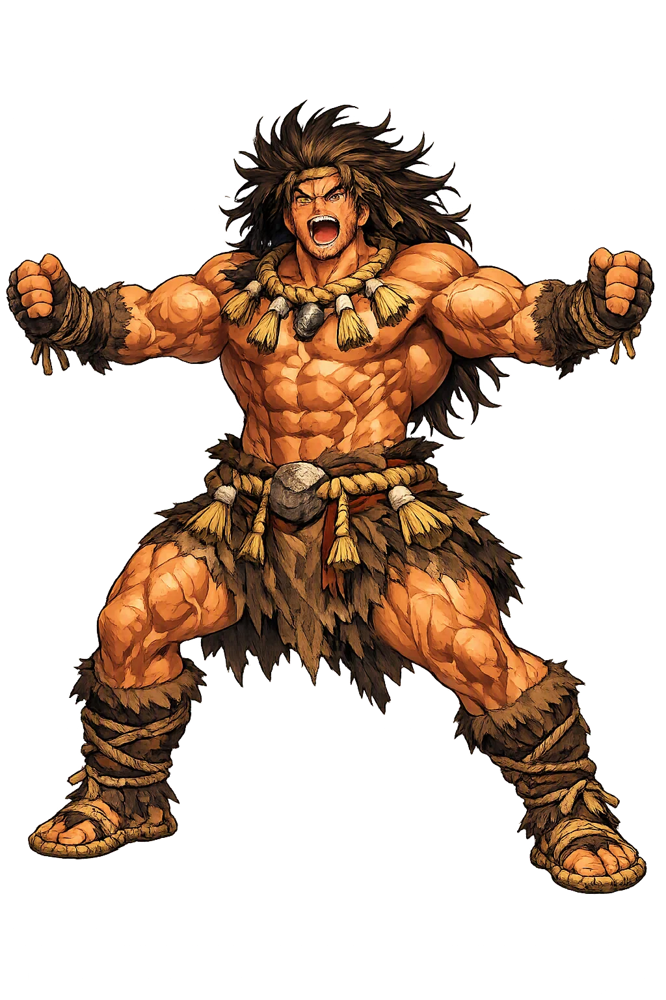
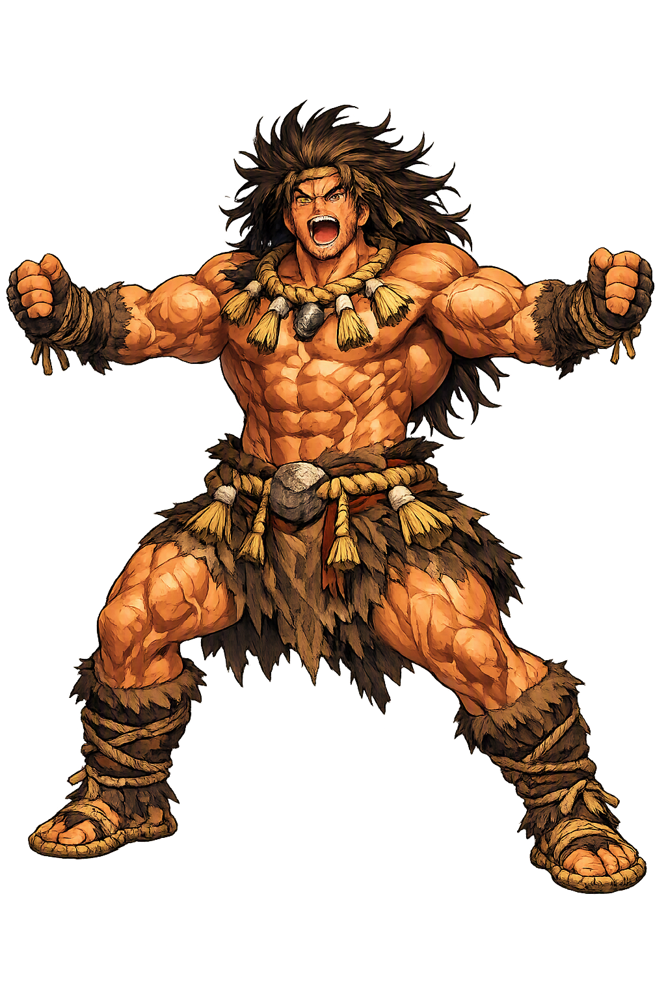

Stories of Tajikarao
Tajikarao's mythology is a single great scene — the Ama-no-Iwato, the Heavenly Rock-Cave — yet it is among the most retold scenes in Japanese religion. When Amaterasu hid herself and night swallowed the world, the eight hundred myriad kami tried persuasion, dance, and mirrors; only when the strong-handed kami acted did the sun return. His entire dossier is those few seconds at the cave mouth (Kojiki; Nihon Shoki).
The crisis begins with Susanoo's rampage. The storm god, granted leave from heaven, trampled down the ridges of Amaterasu's rice-paddies, filled in her irrigation ditches, and finally flayed the heavenly piebald colt and hurled its carcass through the roof of the sacred weaving-hall, so that a weaving-maiden, struck by the flying shuttle, died at her loom (Kojiki). Amaterasu, in grief and fear, 'went into the Rock-Cave of Heaven and fastened its Rock-Door'. At once the Plain of High Heaven went dark and the Central Land of Reed-Plains — Japan itself — fell into long night; the eight hundred myriad kami wailed, and calamitous deities swarmed like summer flies. The myth's architecture is precise: the sun's absence is not night but negation — nothing in the world works until the goddess is brought back out.
The assembled kami answered with misdirection. The goddess Ame-no-Uzume bound up her sleeves with a heavenly vine, took a bundle of sasaki grass for a headdress, overturned a tub before the cave, and stamped out a lewd, rattling dance upon it, baring herself to the roaring laughter of the whole assembly. Amaterasu, hearing the uproar, wondered how the gods could make merry while the world lay dark. When she cracked the Rock-Door to ask, Ame-no-Uzume answered that a goddess greater than she had come — and the kami had already hung the polished mirror Yata-no-Kagami and the curved jewel on the branches of a sakaki tree beside the door, while Ame-no-Koyane intoned the first ritual words. The mirror did the persuading; the dance bought it a crack of light. Cunning opens the door a finger's width — no more.
Leaning out to see the 'new goddess', Amaterasu saw her own blazing reflection — and as she stood amazed, Ame-no-Tajikarao seized her by the hand and pulled her bodily out of the cave (Kojiki). The Nihon Shoki's parallel gives him the rougher deed: he tears the Rock-Door itself from its hinges and casts it away. Either way, dawn broke instantly over heaven and earth; Ame-no-Futotama stretched the great sacred rope, the shimenawa, across the cave mouth so the goddess could not withdraw again, and Susanoo was banished in payment. Of all the kami in the scene, only Tajikarao performs no ruse and speaks no word — he acts. The myth's balance sheet is exact: Uzume's wit creates the opening, the mirror supplies the reason, and strength finishes the work. Each is necessary; only one of them is over in a single motion.
Medieval tradition follows the door. The Nihon Shoki's account of the cave already records that the Rock-Door, once torn free, was hurled far away; shrine legend at Togakushi — the name means nothing other than 'the hidden door' — in the mountains of Shinano (present-day Nagano) holds that it landed there, on the forested slope where the Upper Shrine stands to this day. The five shrines of Togakushi grew around the spot, and the Middle Shrine enshrines Tajikarao himself, worshipped as the kami of strength, decisive action, and the opening of what is shut; pilgrims still climb the avenue of giant cryptomerias to the Oku-sha through snow and mist. No text records where he went afterward; the mountain is his whole biography. A kami who exists for five seconds of myth acquired, through the object he threw, a mountain for a memorial.
Strength, Caves, and the Restoration of Light
Tajikarao (Ame-no-Tajikarao-no-kami) is the kami of raw physical strength in the Japanese pantheon, remembered for a single decisive act: when the sun goddess Amaterasu withdrew into the Ama-no-Iwato rock-cave and plunged the world into darkness, it was Tajikarao who seized her hand and pulled the light back out. His name means 'Strong-Handed Man', and his cult gathers at Togakushi — 'the hidden door' — where tradition says the cave's rock-door landed.
He seized Amaterasu's wrist and hauled her from the Ama-no-Iwato cave as she leaned out (Kojiki).
The personification of chikara, 'strength' — the second graph (力) of his own name.
Patron of caves, thresholds, and the breaking of seals; honored in the mountains of Togakushi in Shinano.
His one act ended the cosmic darkness and returned the sun to the Plain of High Heaven.
From the original script to the living URL
手力男神
The name in its original Japanese form. Tajikarao (手力男神) is attested in the source tradition — “Strong hand man”. Its original diacritics and script distinctions carry the full phonetic and orthographic weight of the source tradition.
tajikarao
The plain tajikarao form is identical to the Unicode restoration. Because this name is already written in Latin letters, no diacritics, stress, or script information were lost — only capitalization differs.
Tajikarao
The Unicode restoration does not need to recover lost marks for Tajikarao. Its value is canonical spelling and consistent cataloguing, not the reconstruction of erased orthography. The domain is readable as-is to both DNS and humanity.
Tajikarao.com
This restoration is written entirely in ASCII letters — no Punycode encoding stands between Tajikarao and the DNS. The domain reads identically to machines and to human eyes.
Owned, ideal, and ASCII forms of Tajikarao
Tajikarao
Restores 手力男神. The full Unicode restoration. tajikarao.com is not in the PuniCodex collection — it is watched for release; if it drops, this temple upgrades to an owned flagship.
How Tajikarao was spoken
How Tajikarao is preserved in writing
A bespoke provenance study for Tajikarao is being prepared by the PUNICODEX scholarly team.
Contribute scholarly provenance →Tajikarao is the theology of the decisive gesture. In the most famous deliberation in Japanese myth — eight hundred myriad kami conferring in the dark — he is the one who stops conferring. Nothing in the sources grants him eloquence, cunning, or lineage; the Kojiki gives him no genealogy, no prior deed, and not a single word. He appears at the cave mouth, closes his hand, and changes the state of the universe from night to day. Then he largely vanishes from the record.
Enter Extended Lore